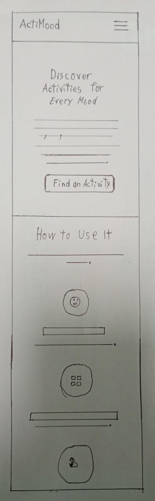
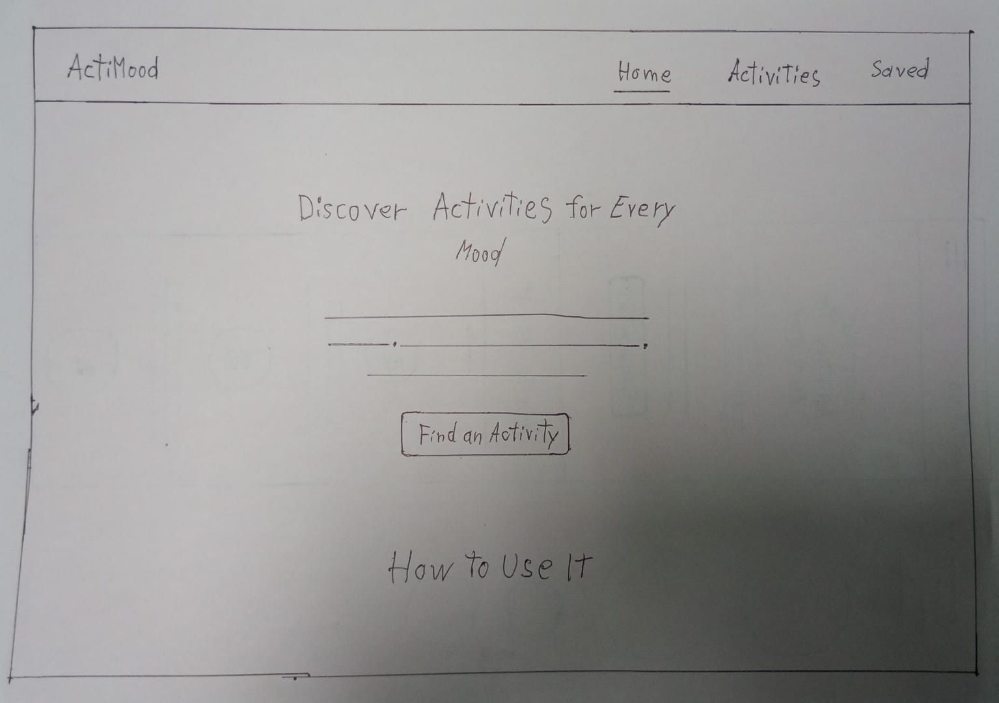

Site Name:
ActiMood
Short, app-like name combining "Activity" + "Mood", making it clear, modern, and easy to remember. That's why I chose it
Site Purpose:
The purpose of ActiMood is connecting emotions with actionable steps by recommending activities based on mood, duration, and category (such as fitness, relaxation, creativity, social, or learning)
Scenarios:
- What can I do right now according to my feelings?
- Which are some tips to do any activity?
Color Schema:
- Main Background: #f3faff
- Footer Background: #e6f6ff
- Headings: #003748
- Paragraph Text: #003748
Typography:
- Headings: Plus Jakarta Sans
- Body Text: Inter
Wireframes:
-

-
